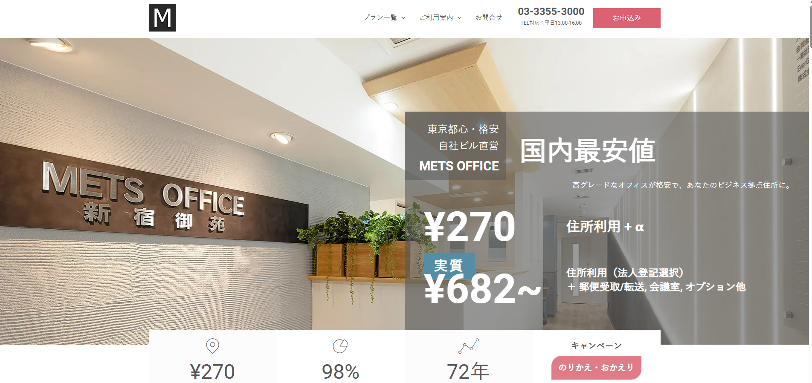
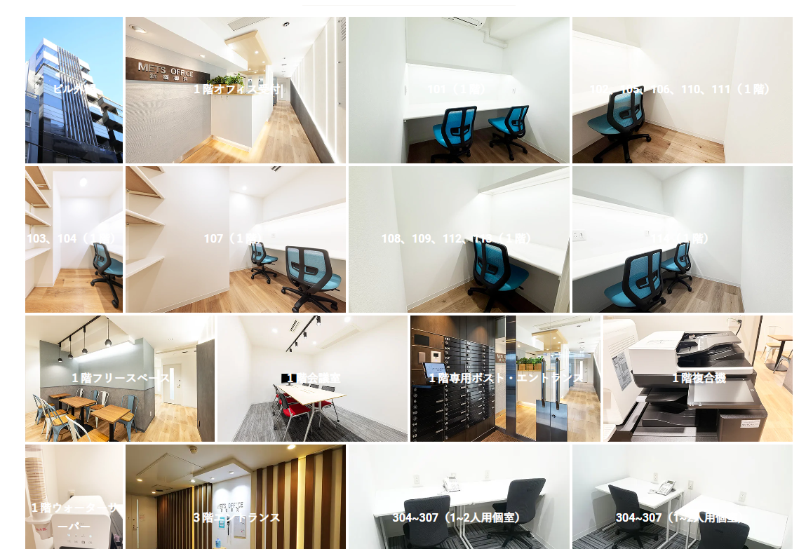
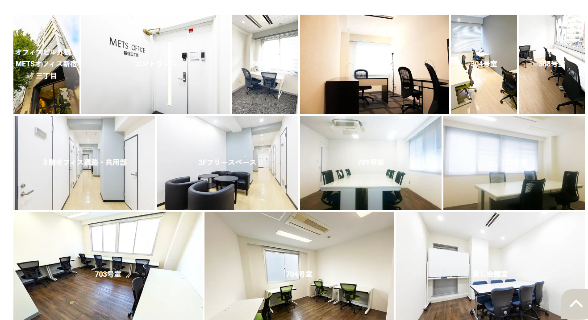
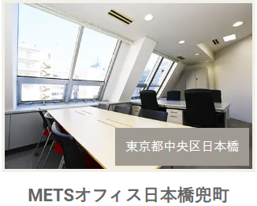
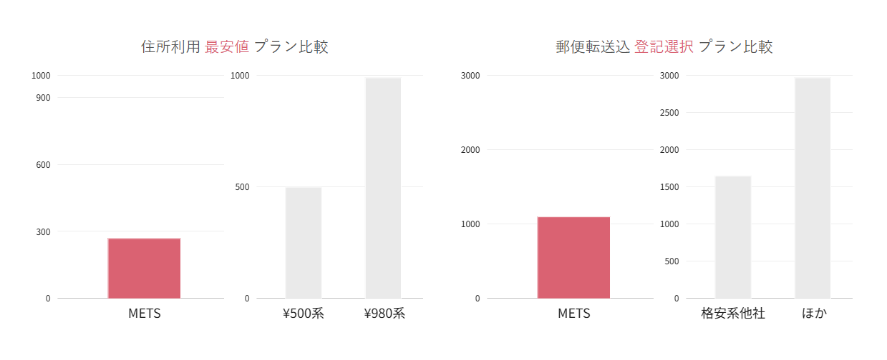

METSバーチャルオフィスは個人事業主に合うのか？月額270円の裏にあるプラン選びの注意点
「月額270円でバーチャルオフィスが持てる」
バーチャルオフィスを調べていると、この数字に目が止まった人は多いはず。
筆者もそうでした。
METSバーチャルオフィスは、東京都内の自社ビルで運営されている格安バーチャルオフィスです。
月額270円〜という価格は、業界最安クラス。
ただし、この「270円」にはいくつかの制約があります。
知らずに契約すると「思っていたのと違う」になりかねない。
この記事では、個人事業主としてバーチャルオフィスを検討した筆者が、
METSバーチャルオフィスのプランを正直に読み解いて、
「どんな人に合うのか」「どのプランを選ぶべきか」をまとめます。
先に結論
- METSバーチャルオフィスの最大の強みは「自社ビル運営」。安さと信頼性を両立
- 月額270円のライトプランは住所利用のみ。法人登記・郵便転送は不可
- 郵便転送や法人登記が必要ならビジネスプラン以上が必要（月額1,430円〜）
- 東京都内に4拠点。新宿アドレスが使えるのは個人事業主にとって大きい
- 「住所だけ最安で持ちたい」人にとっては最有力候補
METSバーチャルオフィスとは何か

METSバーチャルオフィスは、オリンピア興業株式会社が運営するバーチャルオフィスサービスです。 70年以上不動産業を営んできた会社が、自社所有のビルでサービスを提供しています。
バーチャルオフィス業界では、運営会社がビルのオーナーから物件を借りて転貸する形式が一般的です。 その場合、運営会社がビルオーナーに払う賃料が利用者の料金に上乗せされます。
METSバーチャルオフィスはビルそのものを自社で所有しているため、この転貸コストがかかりません。 だから月額270円〜という価格が実現できている。 「安かろう悪かろう」ではなく、構造的に安いのがMETSの最大の特徴です。
「自社ビル運営」のもう一つのメリット。
転貸型のバーチャルオフィスは、ビルオーナーとの契約が終了すると拠点が閉鎖されるリスクがあります。自社ビル運営のMETSバーチャルオフィスにはこのリスクがありません。会員継続率98%（公式発表）という数字も、この安定性を裏付けています。
METSバーチャルオフィスの拠点 ── 4つの東京都内住所
METSバーチャルオフィスの拠点は、東京都内の4箇所です。
| 拠点名 | 所在地 | 最寄り駅 |
|---|---|---|
| 新宿御苑 | 東京都新宿区新宿1丁目 | 新宿三丁目駅 徒歩5分 新宿御苑前駅 徒歩4分 |
| 新宿三丁目 | 東京都新宿区新宿 | 新宿三丁目駅 徒歩3分 |
| 日本橋兜町 | 東京都中央区日本橋 | 日本橋駅・茅場町駅 各徒歩5分 |
| 赤羽 | 東京都北区赤羽 | 赤羽駅 徒歩圏内 |
すべてのビルが自社所有で、管理事務所も同じビル内にあります。 「東京都新宿区新宿」「東京都中央区日本橋」といった一等地の住所が使えるのは、名刺やWebサイトに記載するときのブランド力として大きい。



左から：新宿御苑拠点 / 新宿三丁目拠点 / 日本橋兜町拠点（各公式サイトより）
個人事業主の場合、「東京都新宿区」の住所は、取引先からの信頼性という面でもプラスに働きます。 自宅住所を公開するリスクを回避しつつ、ビジネスの印象を高められるのは一石二鳥です。
METSバーチャルオフィスのプランを正直に比較する

METSバーチャルオフィスのプランは、大きく分けて4つあります。 月額270円の「ライト」が目を引きますが、プランごとにできること・できないことが明確に分かれています。
| ライト | ビジネス 郵便受取 |
ビジネス プラス |
会社設立 サポート |
|
|---|---|---|---|---|
| 月額（税込） | 270円〜 | 847円〜 | 1,430円〜 | 0〜770円 |
| 住所利用 | ○ | ○ | ○ | ○ |
| 法人登記 | × | × | ○ | ○ |
| 郵便受取・転送 | × | ○（月1転送込み） | ○（都度転送） | ○ |
| 来店受取 | × | ○ | ○ | ○ |
| 銀行口座開設 サポート |
× | × | ○ | ○ |
| 会議室利用 | × | × | ○（有料） | ○（有料） |
※ 料金は12か月一括払い時の月額目安です。月払いの場合はやや高くなります。詳細は公式サイトでご確認ください。
月額270円の「ライトプラン」── 安さの裏にある制約
METSバーチャルオフィスのライトプランは、確かに月額270円〜で住所が使えます。 名刺やWebサイト、開業届への記載にはまったく問題ありません。
ただし、以下の制約があります。
- 法人登記ができない ── 将来法人化する場合はプラン変更が必要
- 郵便物の受け取り・転送ができない ── 届いた郵便物を受け取る手段がない
- 来店受取もできない ── 拠点に行っても郵便物を受け取れない
つまり、ライトプランは「住所を名乗れるだけ」のプランです。 それで十分な用途──たとえばWebサイトの特商法表記や名刺への記載──なら、月額270円でまったく問題ありません。
しかし、Google Playの開発者登録やD-U-N-S番号の取得など、登録住所に郵便物が届く可能性がある場合は、ライトプランでは対応できません。 この場合は「ビジネス 郵便受取」以上のプランが必要です。
「最安プラン」で契約して後悔するパターン。
「月額270円で住所が使える！」と飛びついて契約したあとに、「郵便物が届いたけど受け取れない」と気づくケース。筆者がバーチャルオフィスを調べていたときにも、この注意点に触れている記事はほとんどありませんでした。プラン選びは「何に使うか」から逆算してください。
個人事業主はどのプランを選ぶべきか
用途から逆算して、最適なプランを整理します。
住所をWebサイトや名刺に載せたいだけ
→ ライトプラン（月額270円〜）で十分。郵便物を受け取る予定がなければ、これがコスト最小。特商法の表記や名刺への記載はこのプランで対応できます。
郵便物の受け取りも必要
→ ビジネス 郵便受取プラン（月額847円〜）。月1回の転送料が込みなのでコスパが良い。D-U-N-S番号の取得やGoogle Playの審査で郵便物が届く可能性がある方はこちら。
法人登記もしたい
→ ビジネスプラス（月額1,430円〜）。法人登記対応＋銀行口座開設サポート付き。将来法人化を見据えている方はここから始めるのがスムーズ。
12ヶ月以内に法人化したい
→ 会社設立サポート（月額0〜770円）。法人設立日までフリーレント。法人口座開設サポート・専用電話番号サポートが含まれる、法人成りに特化したプラン。
METSバーチャルオフィスが他社より優れている点
① 自社ビル運営だから「安い理由」が明確
繰り返しになりますが、METSバーチャルオフィスの安さは「転貸コストがないから」。 格安バーチャルオフィスの中には、運営元が不透明なサービスもありますが、METSは70年以上の不動産業の実績がある企業が自社ビルで運営しています。 「安い理由が説明できる」というのは、信頼性の面で大きなポイントです。
② 拠点閉鎖のリスクがほぼない
転貸型のバーチャルオフィスは、ビルオーナーとの契約が終了すると拠点が閉鎖されることがあります。 拠点が閉鎖されると、登記住所の変更や名刺・Webサイトの修正が必要になり、コストと手間がかかる。
METSバーチャルオフィスはビルそのものを所有しているため、このリスクが構造的にありません。 「住所が安定している」というのは、長く事業を続ける個人事業主にとって見落としがちですが重要なメリットです。
③ ビルのグレードが格安サービスにしては高い
格安バーチャルオフィスというと、雑居ビルの一室をイメージするかもしれません。 METSバーチャルオフィスの拠点は、受付があり管理もしっかりしているオフィスビルです。 公式サイトや口コミでも「ビルがきれい」「清潔感がある」という評価が目立ちます。
バーチャルオフィスの住所は、調べようと思えば建物の外観や所在地がわかります。 その住所がグレードの低い建物だと、事業の信頼性に影響する可能性がある。 METSバーチャルオフィスはこの点でも安心できます。
④ 個人事業主から法人まで段階的にプランアップできる
ライトプラン（月額270円）で始めて、事業が成長したらビジネスプラス（月額1,430円〜）に変更、さらに法人化するなら会社設立サポートプランへ。 同じ住所のまま、事業のフェーズに合わせてプランを変えられるのは、METSバーチャルオフィスならではの柔軟さです。
「住所だけ最安で持ちたい」人にとっては最有力候補。まずは公式サイトでプラン診断を試してみるのがおすすめです。
METSバーチャルオフィスの注意点 ── 正直に書く
拠点が東京都内に限られる
METSバーチャルオフィスの拠点は東京都内の4箇所のみです。 大阪や名古屋など、他のエリアで住所を持ちたい場合は対象外。 ただし、バーチャルオフィスは実際にそこに通勤するわけではないので、「東京の住所を使いたい」なら全国どこからでも契約できます。
ライトプランでは郵便物を受け取れない
上で詳しく書きましたが、これは最も注意すべきポイントです。 「月額270円」に惹かれて契約したものの、郵便物が届いて受け取れない──というトラブルを避けるために、自分の用途に合ったプランを選んでください。
オプション追加でコストが上がる
METSバーチャルオフィスは基本料金を極限まで下げている分、電話サービス・FAX・会議室などはすべてオプション。 必要なオプションを積み上げると、月額が他社のオールインワンプランと同程度になることもあります。 「自分に本当に必要なオプションは何か」を見極めてから契約するのがおすすめです。
解約タイミングに注意
半年払い・1年払いの一括で支払った場合、途中解約での返金はありません。 3ヶ月目以降の解約であれば解約費用は0円ですが、一括払いの残額は戻ってこない点は理解しておいてください。 最初は月払いで試してから、継続するなら一括払いに切り替えるのが安全です。
METSバーチャルオフィス vs GMOオフィスサポート ── どっちを選ぶ？
個人事業主がバーチャルオフィスを検討するとき、最終的に候補に残りやすいのがMETSバーチャルオフィスとGMOオフィスサポートです。 簡単に比較します。
| METSバーチャルオフィス | GMOオフィスサポート | |
|---|---|---|
| 最安プラン | 月額270円〜（住所のみ） | 月額660円〜（住所のみ） |
| 郵便転送付き | 月額847円〜 | 月額1,650円〜 |
| 運営形態 | 自社ビル運営 | GMOグループ運営 |
| 拠点 | 東京4拠点 | 東京中心に全国複数拠点 |
| 電話転送 | オプション | プラン内に含む |
| こんな人向け | 住所だけ最安で持ちたい | 住所＋電話転送をセットで |
住所利用だけなら、METSバーチャルオフィスが圧倒的にコスパが良い。 ライトプラン月額270円は、GMOの最安プラン月額660円の半分以下。 郵便転送込みでもMETSのほうが安い。
一方で、住所＋電話転送をセットで持ちたいなら、GMOオフィスサポートのほうが管理がシンプル。 電話転送オプションを別契約にする手間がなく、ひとつのプランで完結します。
筆者の場合は、住所と電話転送をまとめたかったのでGMOを契約しましたが、「住所だけ最安で」という方にはMETSバーチャルオフィスが第一選択肢になります。
METSバーチャルオフィスの利用料は経費になる？
はい、バーチャルオフィスの利用料は事業経費として全額計上できます。 勘定科目は「支払手数料」または「地代家賃」が一般的です。
ライトプラン月額270円なら年間3,240円。確定申告で経費にすれば、実質的な負担はさらに小さくなります。 「個人情報を守るためのコスト」として、開業と同時に契約しておいて損はありません。
METSバーチャルオフィスのよくある疑問
Q. 個人事業主でも契約できる？
はい、個人事業主・法人・フリーランスいずれも契約可能です。 申し込みに必要な書類が揃っていれば、最短当日〜翌営業日で審査結果が出ます。
Q. バーチャルオフィスの住所で銀行口座は作れる？
METSバーチャルオフィスのビジネスプラス以上のプランでは、銀行口座開設サポートが利用できます。 公式サイトでも「バーチャルオフィスの住所で銀行口座を開設された会員様は多数いらっしゃいます」と記載されています。 ただし、銀行の審査は事業内容など個別の条件によるため、確約されるものではありません。
Q. 途中でプラン変更はできる？
はい、可能です。ライトプランからビジネスプラスへのアップグレードなど、事業の成長に合わせてプラン変更できます。 同じ住所のまま変更できるので、名刺やWebサイトの修正は不要です。
Q. 開業届にMETSバーチャルオフィスの住所を書ける？
はい、ライトプランを含むすべてのプランで、開業届の事業所住所として記載可能です。 ただし、納税地は原則として自宅住所になるため、事業所住所と納税地は別になります。
まとめ ── 「安いから」ではなく「合っているから」選ぶ
- METSバーチャルオフィスは自社ビル運営で安さと信頼性を両立
- 月額270円のライトプランは住所利用のみ。郵便転送・法人登記は不可
- 郵便転送が必要ならビジネス 郵便受取（月額847円〜）が現実的な最低ライン
- 法人化を見据えるならビジネスプラス（月額1,430円〜）
- 東京の一等地住所で拠点閉鎖リスクなし。長期で事業を続ける人に向いている
- 利用料は全額事業経費として計上可能
バーチャルオフィスは「安いから」で選ぶものではなく、「自分の用途に合っているから」で選ぶもの。 METSバーチャルオフィスは、「住所だけ最安で持ちたい」個人事業主にとって、現時点で最有力の選択肢です。
あわせて読みたい